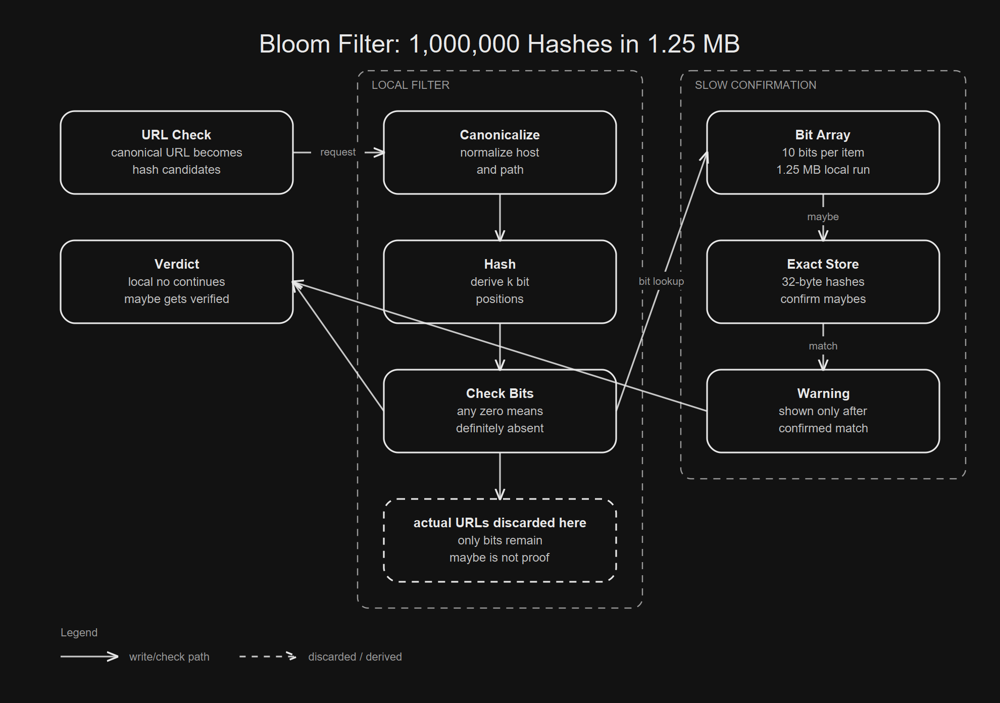

Absence must be exact. Presence may be a maybe.
The original value is not stored in the filter.
The system needs an exact second check.

01 / The naive solution
The Set Is The Obvious Solution
The solution is almost embarrassingly obvious. If there is a list of bad URL hashes, keep it in a set and check the URL before loading the page.
Set<Hash> unsafe = loadUnsafeHashes();
if (unsafe.contains(urlHash)) {
block();
} else {
load();
}That first draft is exact and easy to explain. It also asks every client to keep the exact list close enough for the hot path.
url hash in set => block
url hash not in set => loadThen memory walks into the room.
02 / Local rejection
The Trouble Starts When The List Must Stay Local
Google's current Safe Browsing docs say clients canonicalize URLs, make host suffixes and path prefixes, and hash those combinations. The full hash is 32 bytes. The request form may send a 4 byte prefix when it must ask the service.
canonical URL
host suffixes
path prefixes
SHA 256 hashes
local lookupThe 2022 Google Security post says Chrome can make up to 5 host suffixes, up to 6 path prefixes, and 30 combined checks. It also says more than 99% of checked URLs are cleared by the local list.
5 hosts * 6 paths = 30 combinations
99%+ cleared locallyThat fast local rejection is the point. Asking a server about every page would be slower and more revealing.
03 / The bargain
Bloom's Old Paper Names The Bargain
Burton Bloom's 1970 paper studied membership tests where most queries are not in the set. It named three costs: space, reject time, and allowable error.
space
reject time
allowable errorThe phrase that matters is errors of commission. The filter may say a nonmember looks like a member. It must not say a real member is absent.
member => maybe
nonmember => no, or maybeBloom's sample was hyphenation, not browsers. The structure still generalizes: reject easy cases locally and send the rare maybe to a slower check.
04 / Bit storage
First, Stop Storing The Thing
A Bloom filter stores bits. To insert a value, hash it several ways and set those bit positions to one.
bad.example/a
=> bit 18
=> bit 41
=> bit 77A lookup checks those same positions.
all checked bits are 1 => maybe present
any checked bit is 0 => definitely absentThe filter never stores the URL. It does not store the SHA 256 hash either. It stores the shadow those hashes cast on a bit array.
05 / Strong no
Empty Bits Are The Proof Of Absence
The no answer is stronger than the yes answer. A zero bit proves this value was never inserted, because insertion would have set that bit.
lookup bits: 1 1 0 1
^
absence proofThe maybe answer is weaker. Another value may have set the same positions earlier.
Alice set bit 10
Bob set bit 44
Carol set bit 10 and bit 44That collision is the whole trick. It is also the whole cost.
06 / Error curve
The Formula Predicts The Pain
The usual false positive estimate is compact enough to fit on a napkin.
p = (1 - e^(-k*n/m))^k
n = inserted items
m = bits in the filter
k = hash positionsMore bits lower the chance that unrelated items collide. More hashes help until they fill too much of the array.
k ~= bits_per_item * ln(2)At that setting, the bit array tends to hover near half full. That is why the measured fill ratio in the repository sits near 0.50 for the larger rows.
07 / Executable evidence
The Local Benchmark Makes The Curve Visible
The repository inserts 1,000,000 synthetic unsafe URL hashes. It probes 1,000,000 different safe URL hashes. The output is evidence from the local model, not a claim about Google's production systems.
bits_per_element,bloom_bytes,false_positives,measured_fp_rate
6,750000,55736,0.05573600
10,1250000,8112,0.00811200
25,3125000,6,0.00000600At 10 bits per element, the filter used 1,250,000 bytes. The exact 32 byte hashes alone would take 32,000,000 bytes for the same 1,000,000 entries.
exact hashes: 32,000,000 bytes
Bloom bits: 1,250,000 bytesThat is not free. The 10 bit filter also reported 8,112 false positives.
08 / Historical implementation
Twenty Five Bits Makes The Maybe Rare
The old Chromium Bloom filter header is useful historical evidence. It describes a simple Bloom filter, says it used 20 hashes, and sets a 25 bit per item sizing ratio.
hashes: 20
bits per item: 25
minimum file: 250,000 bytes
maximum file: 3 * 1024 * 1024 bytesThe local implementation does not copy Chromium. It uses 17 hash positions at 25 bits per element because that is the rounded formula. The row explains the same tradeoff.
inserted,bits_per_element,hash_count,false_positives
1000000,25,17,6More memory buys fewer maybes.
09 / Current docs
Current Safe Browsing Uses Hash Prefixes
This distinction matters. Current Google documentation describes hash prefix lists and real time privacy preserving checks, not the old Bloom filter path.
local hash prefixes
server full hash lookup
privacy preserving real time checksThe Bloom filter is still the clean teaching object. It shows why a browser shaped system wants local negative answers and remote confirmation only on rare candidates.
local no => continue
local maybe => ask slower system
confirmed => warn10 / Confirmation
False Positives Need A Second Door
A Bloom filter should not be the final security verdict. It is a prefilter.
Bloom says no => safe from this list
Bloom says maybe => do the exact check
exact check hits => block
exact check misses => loadWithout the second door, a false positive becomes a false accusation. With the second door, it becomes a little extra work.
wrong model: maybe means guilty
right model: maybe means inspectThat is the systems lesson hiding under the math.
11 / Deletion cost
Deletion Is Where The Simple Version Lies
The simple bit array cannot safely delete. Clearing a bit for one value may erase evidence needed by another value.
A sets bit 7
B sets bit 7
delete A clears bit 7
B now disappearsCounting Bloom filters solve this with counters instead of bits, but that spends more memory.
bit filter: 0 or 1
counting filter: 0, 1, 2, 3...The cheap structure has a cheap operation set: add and query.
12 / Build one
Build The Dumb Version Yourself
Start with a bit array and one deterministic benchmark. The useful version is the one that makes the bargain executable.
[ ] choose n
[ ] choose bits per item
[ ] compute k
[ ] insert known bad hashes
[ ] probe absent hashes
[ ] compare measured and predicted false positivesThe core code is just this idea.
for (int i = 0; i < hashCount; i++) {
bits.set(index(hash, i));
}And the lookup is the mirror image.
for (int i = 0; i < hashCount; i++) {
if (!bits.get(index(hash, i))) return false;
}
return true;13 / Adversarial proof
Then Break It
Try to make the filter lie in the forbidden direction. Insert every bad URL, then query every inserted value.
expected false negatives: 0
measured false negatives: 0Then overfill it. A filter sized for 10,000 entries should get noisy after 20,000 insertions.
sized for 10,000
inserted 20,000
false positives riseThen compare the curve. If 25 bits per element does not beat 10, and 10 does not beat 6, the implementation is broken.
6 bits => noisy
10 bits => quieter
25 bits => very quiet14 / The part that generalizes
The Larger Lesson Is To Respect Maybe
The mistake is thinking every question deserves a perfect local answer. Sometimes the better design is a cheap local no and an honest path for maybe.
wrong:
store the whole truth everywhere
right:
store enough to reject most work locally
confirm the rare maybe exactlyA Bloom filter is not magic compression. It is a contract. You give up perfect yes answers, and in return the common no becomes small enough to keep close.
A Bloom filter does not prove danger. It earns the right to ask.
Do not ask whether the structure is clever. Ask whether the product can tolerate a maybe.